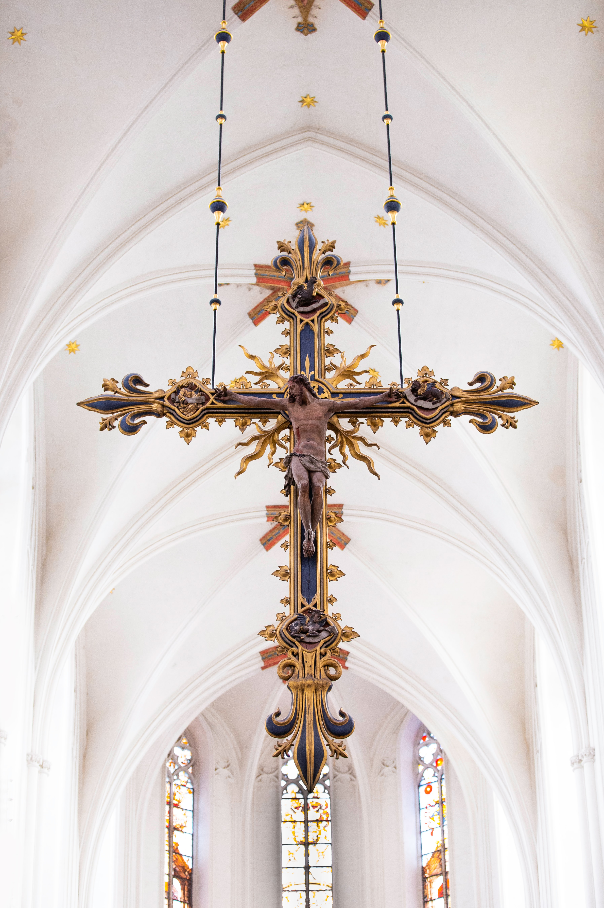

링크를 걸어봅시다
- 네이버
- 다음
- 구글
사도신경
전능하사 천지를 만드신 하나님 아버지를 내가 믿사오며,
그 외아들 우리주 예수그리스도를 믿사오니,
이는 성령으로 잉태하사
동정녀 마리아에게 나시고,
본디오 빌라도에게 고난을 받으사
십자가에 못박혀 죽으시고
장사한지 사흘만에 죽은 자 가운데서 다시 살아 나시며
하늘에 오르사 전능하신 하나님 우편에 앉아 계시다가
저리로서 산자와 죽은자를 심판하러오시리라.
성령을 믿사오며 거룩한 공회와
성도가 서로 교통하는 것과
죄를 사하여 주신것과
몸이 다시 사신것과
영원히 사는것을 믿사옵나이다.
아멘
